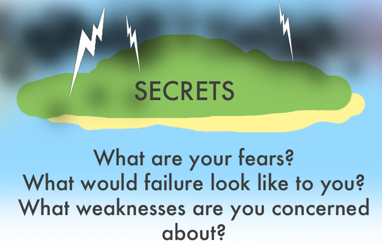

6. Secrets (Fears, Failures, and Weaknesses)
- What fears do you experience?
- Rejection or abandonment
- Failure
- Future events
- Losing the control to make my own choices or control my own time
- Change
- Criticism of my work
- Past failures being discovered
- Loneliness
- Loss
- Death
- Money and security
- Knowing what you know now, what are some things in your past you
would like to change?
- Bad experiences?
- Lost opportunities?
- Physical features?
- Is there anything you would be afraid to talk to me about?
- Anything you think might make me angry?
- Something you are afraid I think would be silly?
- Thoughts you are having?
- Desires about God?
- When was a time in your life when you had enemies?
- What was your most embarrassing moment?
- What is your worst childhood experience?
- What frustrates you the most?
- What is the primary vulnerable feeling under the secondary emotion of
frustration or anger?